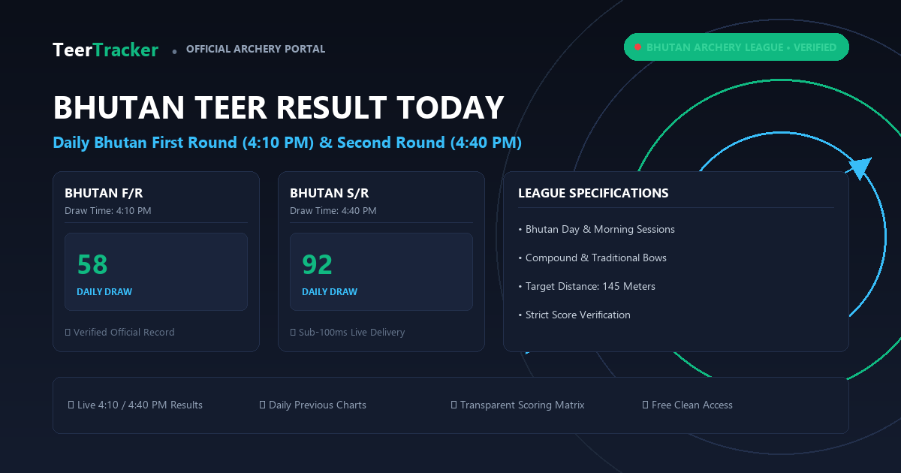

Bhutan Morning Teer
F/R 10:30 AM • S/R 11:30 AM
F/R (10:30 AM)
34
S/R (11:30 AM)
67
14 Nov 2026 • Bhutan Border Range • Day Session
F/R 10:30 AM • S/R 11:30 AM
F/R 09:30 PM • S/R 10:30 PM
Official verified winning numbers for Bhutan Morning and Day archery draws:
| Date | Morning F/R (10:30 AM) | Morning S/R (11:30 AM) | Day F/R (04:15 PM) | Day S/R (05:15 PM) |
|---|---|---|---|---|
| 07.11.2026 | 34 | 67 | 51 | 89 |
| 06.11.2026 | 18 | 45 | 72 | 30 |
| 05.11.2026 | 90 | 23 | 64 | 11 |
| 04.11.2026 | 55 | 78 | 09 | 82 |

Archery (known locally as Dha) is the national sport of the Kingdom of Bhutan. Bhutan Teer emerged as a cross-border archery numbers sport, popular among players across Bhutan and neighboring Indian border regions like West Bengal and Assam.
Key draw characteristics include:
Calculating common numbers for Bhutan Teer relies on tracking consecutive ending patterns between Morning and Day draws. Because morning arrows set the baseline variance, analysts evaluate morning endings against previous week medians.
Review comprehensive formula guides on our Teer Common Numbers page.
Archery, known natively as Dha, holds the status of national sport throughout the Kingdom of Bhutan. Unlike the standard 50-yard Khasi archery range in Shillong, traditional Bhutanese tournaments feature long-distance shooting over 145 meters (nearly 160 yards).
Bhutan Teer draws incorporate both traditional carved bamboo longbows and modern high-tension compound bows. Two opposing teams shoot arrows toward wooden targets placed at opposite ends of the shooting field. The unique distance requires exceptional physical strength, steady aim, and keen wind judgment.
| Tournament Session | First Round (FR) | Second Round (SR) | Target Distance |
|---|---|---|---|
| Bhutan Morning Session | 10:30 AM IST | 11:30 AM IST | 145 Meters |
| Bhutan Day Session (Primary) | 4:10 PM IST | 4:40 PM IST | 145 Meters |
| Bhutan Night League | 8:30 PM IST | 9:30 PM IST | 145 Meters |
The scoring methodology follows the traditional hit count principle. At the end of the round, team judges and independent marshals inspect the target boards. They count every arrow firmly embedded within the scored boundary.
The total count of confirmed target hits determines the final result. The last two digits of that hit sum constitute the official winning number. For instance, if 258 arrows successfully strike the target board across the shooting session, the declared winning number is 58.
Followers of Bhutan Teer monitor weekly score frequency tables to observe recurring houses and endings. Statistical distributions show that numbers between 00 and 99 have an equal probability on every independent draw, yet local analysts frequently use previous week median values to establish target clusters for Monday to Saturday games.
Numerous unauthorized websites post counterfeit Bhutan Teer numbers or claim to sell advance VIP tickets. Genuine scores originate strictly from verified tournament scoring boards. Always verify numbers against our authenticated daily scoreboard before settling wagers.
Morning round one declares at 10:30 AM, round two at 11:30 AM. Day round one declares at 4:15 PM, round two at 5:15 PM.
You can browse historical scorecards for all regional games on our Previous Results Archive.
Bhutan Teer draws run daily throughout the week, including selected Sunday sessions depending on the local archery club schedule.